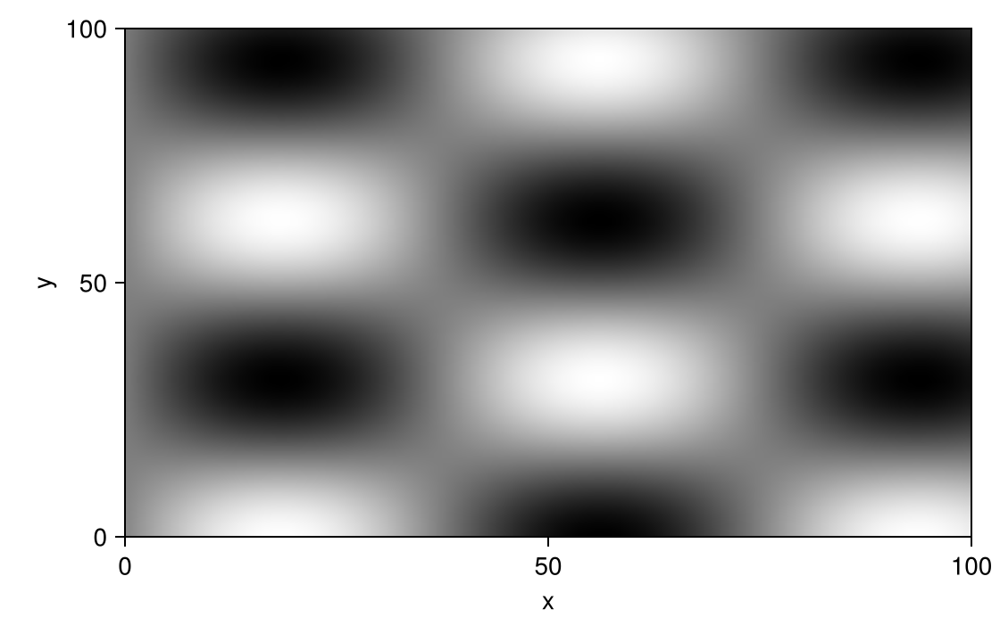

Custom hits
Sometimes the thing you want people to click is not a mark Makie drew: regions of interest on a microscope image, zones on a map, the arms of a diagram. Sometimes it is, but a click should return something richer than an ElementEvent. Masque has three levels for this, each more work and more control than the last:
RegionInteractable— list circles, rectangles, and polygons placed in data coordinates. Enough for most cases.FunctionInteractable— compute hit geometry yourself from the figure's layout, for shapes the first level cannot express.- A subtype of
AbstractInteractable— also choose what a click returns, with an event type of your own.
None of them draws anything: the figure is still whatever Makie drew, and a custom interactable only says where the pointer can hit and what each hit means. Draw a visible outline with Makie if the regions should be visible.
Regions over a figure
Pass a list of shapes and one payload per shape. Hovering a region shows its payload, and a click returns an ElementEvent that carries the payload's fields (pick.name):
Notebook as text
Hold the pointer over a region to read its name, then click it. The last cell names the region.
The image is the figure. The circle, the rectangle, and the triangle are extra hit regions, with a name on each one.
begin
fig = Figure(size = (560, 360))
ax = Axis(fig[1, 1]; xlabel = "x", ylabel = "y")
img = [Float32(sin(i / 12) * cos(j / 10)) for i in 1:100, j in 1:100]
image!(ax, img)
regions = [
(:circle, (20.0, 20.0), 14.0),
(:rect, (60.0, 60.0), 20.0, 14.0),
(:polygon, [(30.0, 70.0), (50.0, 90.0), (20.0, 90.0)]),
]
names = [(; name = "cell A"), (; name = "cell B"), (; name = "cell C")]
hits = RegionInteractable(
ax; regions, payloads = names, id = :cells,
tooltip = masque"<b>$(name)</b>",
)
nothing
end@bind ev stores a click in ev. Hover updates the card and does not change ev.
@bind ev masque(fig, hits)
Before a click, ev is nothing. ev.name is the region's name. This cell reads ev, so it re-runs on the click.
if ev === nothing
"click a region"
else
"$(ev.name) selected"
endclick a regionEach region is one of
(:circle, (cx, cy), r) # r in logical pixels
(:rect, (cx, cy), w, h) # w, h in data space
(:polygon, [(x, y), ...]) # a ring in data spaceRectangles and polygons are in data coordinates, so they stay on the features they outline. A circle's centre is in data coordinates too, but its radius is in logical pixels, like a scatter marker's size: r = 8 is an eight-pixel target however wide the axis is. Pass the logical size; Masque scales it for the figure's resolution itself. payloads is required — a region has no data of its own — and tooltip works as elsewhere (see Tooltips).
Masque groups the regions by shape, so one RegionInteractable with id = :cells produces up to three layers: :cells_c (circles), :cells_r (rectangles), and :cells_p (polygons). pick.layer reports those ids, and selected= uses them.
Compute hit geometry
When the shapes are not circles, rectangles, or polygons — a set of line segments, say, or regions on several axes at once — build the hit layers yourself. FunctionInteractable takes a function that receives the figure's InteractionContext and returns a vector of HitLayers. data_to_image_px converts a data point on an axis to the image pixels the overlay works in, and Masque.axis_id(ctx, ax) names the axis a layer belongs to.
begin
fig = Figure()
ax = Axis(fig[1, 1])
verts = [(0.0, 0.0), (2.0, 1.0), (3.0, 2.0), (5.0, 0.5)]
linesegments!(
ax, first.(verts), last.(verts);
color = :firebrick, linewidth = 4,
)
track = FunctionInteractable() do ctx
geom = Float64[]
for p in verts
q = data_to_image_px(ctx, ax, p)
push!(geom, q[1], q[2])
end
nseg = length(verts) ÷ 2
[
HitLayer(
:track,
:segments,
geom,
[(; i = k) for k in 1:nseg],
Masque.axis_id(ctx, ax),
(:click, :hover),
),
]
end
end@bind pick masque(fig, track)Each layer's geometry is in image pixels, laid out according to its kind — a flat vector for most kinds, a vector of paths or rings for :lines and :polygons:
| Kind | geometry | One element is |
|---|---|---|
:circles | [cx, cy, r, cx, cy, r, …] | one circle |
:segments | [x0, y0, x1, y1, …] | one segment (a pair of points) |
:polyline | [x, y, x, y, …] (NaN starts a gap) | one edge between consecutive points |
:lines | a vector of paths, each [x, y, …] | one whole path |
:rects | [cx, cy, w, h, …] | one rectangle |
:polygons | one ring [x, y, …] per element, or [exterior, hole, …] for an element with holes | one polygon |
Heatmap-style :grid layers use a different, edge-based layout; build those with RectInteractable's grid= keyword rather than by hand. payloads has one entry per element. A click on a layer returns an ElementEvent, with the payload's fields on it. Because the function sees the whole figure, one FunctionInteractable can return layers on several axes.
A custom interactable
To make a click return a struct of your own, subtype AbstractInteractable and implement three methods: hitlayers (the hit geometry, as above), bondtype (the type a click produces), and transform_bond (build that value from the clicked element). The event type subtypes InteractionEvent. Put the type definitions in their own cell, so rebuilding the figure does not redefine them:
begin
struct CityPick <: InteractionEvent
layer::Symbol
index::Int
city::String
pop::Int
end
struct Cities <: AbstractInteractable
ax
pts
rows
id::Symbol
end
Masque.bondtype(::Cities) = CityPick
function Masque.hitlayers(i::Cities, ctx)
geom = Float64[]
for p in i.pts
q = data_to_image_px(ctx, i.ax, p)
r = 8 * ctx.scaling
push!(geom, q[1], q[2], r)
end
[
HitLayer(
i.id,
:circles,
geom,
Vector{Any}(i.rows),
Masque.axis_id(ctx, i.ax),
(:click, :hover),
),
]
end
function Masque.transform_bond(i::Cities, layer::HitLayer, index, js_payload)
row = i.rows[index]
CityPick(i.id, index, row.city, row.pop)
end
endbegin
fig = Figure()
ax = Axis(fig[1, 1]; xlabel = "lon", ylabel = "lat")
rows = [
(; city = "Tokyo", pop = 37),
(; city = "Delhi", pop = 32),
(; city = "Shanghai", pop = 27),
]
pts = [(139.7, 35.7), (77.2, 28.6), (121.5, 31.2)]
scatter!(ax, first.(pts), last.(pts); markersize = 16)
cities = Cities(ax, pts, rows, :cities)
end@bind pick masque(fig, cities)pick === nothing ? "click a city" : "$(pick.city), $(pick.pop) million"index arrives at transform_bond already 1-based. A type that is happy with the default ElementEvent only needs hitlayers.